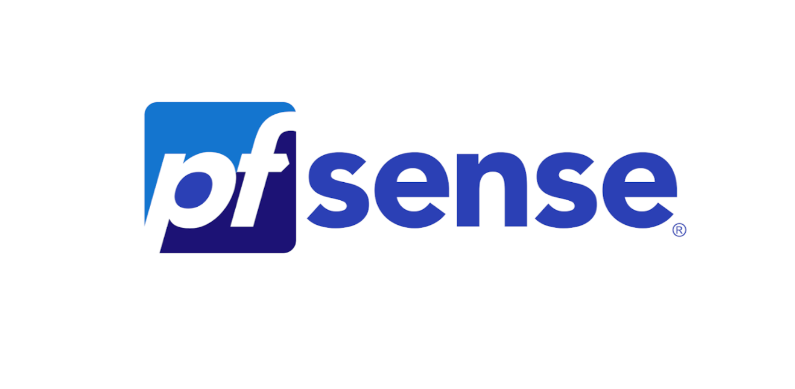
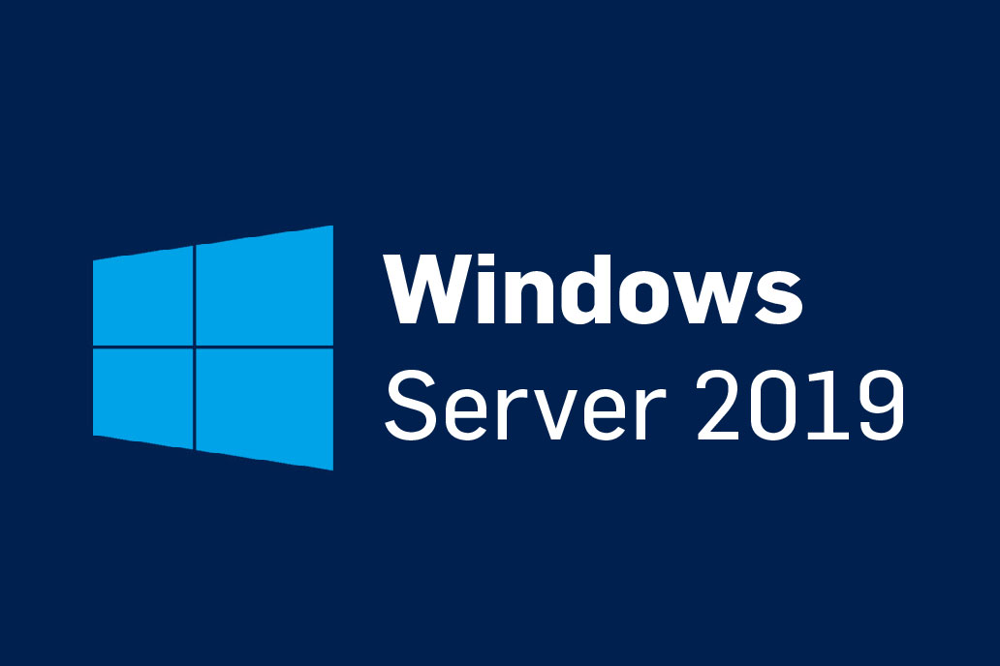

Les projets présentés ci-dessous sont des activités ayant été réalisées en période de stage en milieu professionnel lors de l'année de terminale bac pro réseaux informatiques et systèmes communicants.
Le premier projet réalisé lors de la première période de stage de l'année de terminale au service informatique de l'hopital de Lons-le-Saunier consistait à utiliser un ancien serveur de l'hopital pour faire un serveur de gestion de donnée. Il était donc nécessaire de faire en sorte que le serveur puisse stocker des données et que ces dernières soit accessibles. Il fallut également mettre en place un pare feu du nom de Pfsense. Nous avons utilisé VmWare pour réaliser plusieurs machines virtuelles de Microsoft serveur 2019.

Le second projet avait pour but de reprendre un des serveurs et le remettre en configuration d'usine pour pouvoir en faire un serveur d'authenification radius. Cela permet de créer des comptes utilisateurs avec des droits spécifiques et des codes de sessions pour chaque utilisateur. Nous avons encore une fois utilisé windows serveur 2019 pour pouvoir gérer ces sessions et ces droits.
